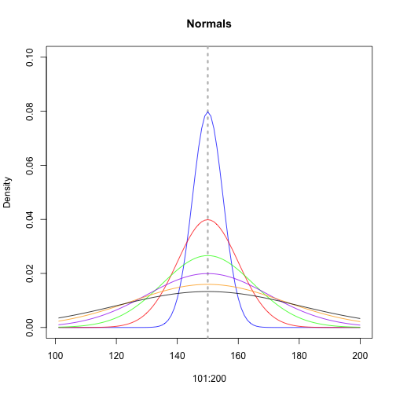

Resources
Plenty of helpful sheets for common/routine functions in R. For example:
- https://cran.r-project.org/doc/contrib/Short-refcard.pdf
- http://www.columbia.edu/~cjd11/charles_dimaggio/DIRE/resources/R/rFunctionsList.pdf

Daniel Anderson
R Training: Florida State University, June 21-22, 2016
Plenty of helpful sheets for common/routine functions in R. For example:
There are lots of functions that you will use and need as you get deeper into programming with R. Gaining fluency with these functions is one of the keys to taking the "next step" with R and truly being comfortable with it. Some examples of functions I use routinely include the following:
rep() repeats an element or vector a specified number of timesseq() creates a sequence of numbers from x to y: creates an integer index that changes by 1table() creates a summary of the number of times an element occurs in a
vector (similar to Frequencies in SPSS)c() creates a vectormerge() merges two data frames together by a common identifier. Can
handle left, right, inner, or full joins.split() breaks a dataset or a vector into a list, separated by a
categorical variablerbind() row binds two or more matrices or data frames together. Note that
the matrices/data frames must have the equivalent number of columns, and must
have the same column names (which for matrices could be something like
[,1])cbind() column binds two or more matrices or data frames together (no
common identifier necessary)ifelse() vectorized operator for conditional recoding of a vector. Takes
three arguments: If condition == TRUE, then carry out an operation, else carry out a different operation.rnorm(), rbinom(), rpois(), etc., create randomly generated data from
the specified distribution (with the specified distributional properties).dnorm(), dbinom(), dpois(), etc, calculate the likelihood of specific
data occurring from the specified distribution (with the specified distributional properties).str() provides the basic structure of the object (most useful for lists and
data frames).head() and tail() display the first 6 (head) and the last 6 (tail) rows
of a given data frame.summary() provides statistical summary information on vectorssample() randomly select n observations from a vectororder() organizing a vector in ascending or descending order (ascending by
default)rev() reverses the elements of a vectornrow() calculates the number of rows in a matrix/data framencol() calculates the number of columns in a matrix/data framewhich() logical evaluation; returns elements in a vector that meet the
specified conditionwhich.min(), which.max() returns the index of minimum or maximum,
respectively, from a vectorcut() divides a continuous vector x into intervals at the specified
breaksna.omit() removes all missing values from a vector, matrix, or data frameunique() select unique elements within a vectorpaste() and paste0() concatenates string elements (paste0 has no
separator, paste defaults to a space)is.na(), is.null()length()rep("a", 5)
## [1] "a" "a" "a" "a" "a"
rep(c(3,5), 7)
## [1] 3 5 3 5 3 5 3 5 3 5 3 5 3 5
rep(c(3, 5), each = 2, length.out = 7)
## [1] 3 3 5 5 3 3 5
seq(from = 3, to = 12, by = 4)
## [1] 3 7 11
seq(from = 3, to = 12, by = 0.1)
## [1] 3.0 3.1 3.2 3.3 3.4 3.5 3.6 3.7 3.8 3.9 4.0 4.1 4.2 4.3
## [15] 4.4 4.5 4.6 4.7 4.8 4.9 5.0 5.1 5.2 5.3 5.4 5.5 5.6 5.7
## [29] 5.8 5.9 6.0 6.1 6.2 6.3 6.4 6.5 6.6 6.7 6.8 6.9 7.0 7.1
## [43] 7.2 7.3 7.4 7.5 7.6 7.7 7.8 7.9 8.0 8.1 8.2 8.3 8.4 8.5
## [57] 8.6 8.7 8.8 8.9 9.0 9.1 9.2 9.3 9.4 9.5 9.6 9.7 9.8 9.9
## [71] 10.0 10.1 10.2 10.3 10.4 10.5 10.6 10.7 10.8 10.9 11.0 11.1 11.2 11.3
## [85] 11.4 11.5 11.6 11.7 11.8 11.9 12.0
seq(from = 3, to = 12, length.out = 5)
## [1] 3.00 5.25 7.50 9.75 12.00
3:7
## [1] 3 4 5 6 7
-4:-8
## [1] -4 -5 -6 -7 -8
data(mtcars)
table(mtcars$cyl)
##
## 4 6 8
## 11 7 14
table(mtcars$cyl, mtcars$carb) # rows, columns
##
## 1 2 3 4 6 8
## 4 5 6 0 0 0 0
## 6 2 0 0 4 1 0
## 8 0 4 3 6 0 1
table(mtcars$cyl, mtcars$carb, mtcars$vs) # rows, columns
## , , = 0
##
##
## 1 2 3 4 6 8
## 4 0 1 0 0 0 0
## 6 0 0 0 2 1 0
## 8 0 4 3 6 0 1
##
## , , = 1
##
##
## 1 2 3 4 6 8
## 4 5 5 0 0 0 0
## 6 2 0 0 2 0 0
## 8 0 0 0 0 0 0
mpgByCarb <- aggregate(mpg ~ carb, data = mtcars, FUN = mean )
mpgByCarb
## carb mpg
## 1 1 25.34286
## 2 2 22.40000
## 3 3 16.30000
## 4 4 15.79000
## 5 6 19.70000
## 6 8 15.00000
names(mpgByCarb)[2] <- "carbMeanMPG"
mtcars <- merge(mtcars, mpgByCarb, by = "carb")
head(mtcars)
## carb mpg cyl disp hp drat wt qsec vs am gear carbMeanMPG
## 1 1 18.1 6 225.0 105 2.76 3.460 20.22 1 0 3 25.34286
## 2 1 21.4 6 258.0 110 3.08 3.215 19.44 1 0 3 25.34286
## 3 1 21.5 4 120.1 97 3.70 2.465 20.01 1 0 3 25.34286
## 4 1 32.4 4 78.7 66 4.08 2.200 19.47 1 1 4 25.34286
## 5 1 22.8 4 108.0 93 3.85 2.320 18.61 1 1 4 25.34286
## 6 1 33.9 4 71.1 65 4.22 1.835 19.90 1 1 4 25.34286
X dataset = first dataset listed; Y dataset = second dataset listed
Keep all cases in the X dataset, drop cases in the Y dataset that don't match the X dataset
merge(..., all.x = TRUE)
Keep all cases in the Y dataset, drop cases in the X dataset that don't match the Y dataset
merge(..., all.y = TRUE)
Keep only cases that match in both files (inner join; default)
merge(...)
Keep all cases in both datasets (full join or outer join)
merge(..., all = TRUE)
str(split(mtcars, mtcars$carb))
## List of 6
## $ 1:'data.frame': 7 obs. of 12 variables:
## ..$ carb : num [1:7] 1 1 1 1 1 1 1
## ..$ mpg : num [1:7] 18.1 21.4 21.5 32.4 22.8 33.9 27.3
## ..$ cyl : num [1:7] 6 6 4 4 4 4 4
## ..$ disp : num [1:7] 225 258 120.1 78.7 108 ...
## ..$ hp : num [1:7] 105 110 97 66 93 65 66
## ..$ drat : num [1:7] 2.76 3.08 3.7 4.08 3.85 4.22 4.08
## ..$ wt : num [1:7] 3.46 3.21 2.46 2.2 2.32 ...
## ..$ qsec : num [1:7] 20.2 19.4 20 19.5 18.6 ...
## ..$ vs : num [1:7] 1 1 1 1 1 1 1
## ..$ am : num [1:7] 0 0 0 1 1 1 1
## ..$ gear : num [1:7] 3 3 3 4 4 4 4
## ..$ carbMeanMPG: num [1:7] 25.3 25.3 25.3 25.3 25.3 ...
## $ 2:'data.frame': 10 obs. of 12 variables:
## ..$ carb : num [1:10] 2 2 2 2 2 2 2 2 2 2
## ..$ mpg : num [1:10] 18.7 30.4 24.4 22.8 15.5 15.2 30.4 19.2 26 21.4
## ..$ cyl : num [1:10] 8 4 4 4 8 8 4 8 4 4
## ..$ disp : num [1:10] 360 75.7 146.7 140.8 318 ...
## ..$ hp : num [1:10] 175 52 62 95 150 150 113 175 91 109
## ..$ drat : num [1:10] 3.15 4.93 3.69 3.92 2.76 3.15 3.77 3.08 4.43 4.11
## ..$ wt : num [1:10] 3.44 1.61 3.19 3.15 3.52 ...
## ..$ qsec : num [1:10] 17 18.5 20 22.9 16.9 ...
## ..$ vs : num [1:10] 0 1 1 1 0 0 1 0 0 1
## ..$ am : num [1:10] 0 1 0 0 0 0 1 0 1 1
## ..$ gear : num [1:10] 3 4 4 4 3 3 5 3 5 4
## ..$ carbMeanMPG: num [1:10] 22.4 22.4 22.4 22.4 22.4 22.4 22.4 22.4 22.4 22.4
## $ 3:'data.frame': 3 obs. of 12 variables:
## ..$ carb : num [1:3] 3 3 3
## ..$ mpg : num [1:3] 15.2 17.3 16.4
## ..$ cyl : num [1:3] 8 8 8
## ..$ disp : num [1:3] 276 276 276
## ..$ hp : num [1:3] 180 180 180
## ..$ drat : num [1:3] 3.07 3.07 3.07
## ..$ wt : num [1:3] 3.78 3.73 4.07
## ..$ qsec : num [1:3] 18 17.6 17.4
## ..$ vs : num [1:3] 0 0 0
## ..$ am : num [1:3] 0 0 0
## ..$ gear : num [1:3] 3 3 3
## ..$ carbMeanMPG: num [1:3] 16.3 16.3 16.3
## $ 4:'data.frame': 10 obs. of 12 variables:
## ..$ carb : num [1:10] 4 4 4 4 4 4 4 4 4 4
## ..$ mpg : num [1:10] 21 21 14.3 10.4 14.7 19.2 17.8 13.3 15.8 10.4
## ..$ cyl : num [1:10] 6 6 8 8 8 6 6 8 8 8
## ..$ disp : num [1:10] 160 160 360 460 440 ...
## ..$ hp : num [1:10] 110 110 245 215 230 123 123 245 264 205
## ..$ drat : num [1:10] 3.9 3.9 3.21 3 3.23 3.92 3.92 3.73 4.22 2.93
## ..$ wt : num [1:10] 2.62 2.88 3.57 5.42 5.34 ...
## ..$ qsec : num [1:10] 16.5 17 15.8 17.8 17.4 ...
## ..$ vs : num [1:10] 0 0 0 0 0 1 1 0 0 0
## ..$ am : num [1:10] 1 1 0 0 0 0 0 0 1 0
## ..$ gear : num [1:10] 4 4 3 3 3 4 4 3 5 3
## ..$ carbMeanMPG: num [1:10] 15.8 15.8 15.8 15.8 15.8 ...
## $ 6:'data.frame': 1 obs. of 12 variables:
## ..$ carb : num 6
## ..$ mpg : num 19.7
## ..$ cyl : num 6
## ..$ disp : num 145
## ..$ hp : num 175
## ..$ drat : num 3.62
## ..$ wt : num 2.77
## ..$ qsec : num 15.5
## ..$ vs : num 0
## ..$ am : num 1
## ..$ gear : num 5
## ..$ carbMeanMPG: num 19.7
## $ 8:'data.frame': 1 obs. of 12 variables:
## ..$ carb : num 8
## ..$ mpg : num 15
## ..$ cyl : num 8
## ..$ disp : num 301
## ..$ hp : num 335
## ..$ drat : num 3.54
## ..$ wt : num 3.57
## ..$ qsec : num 14.6
## ..$ vs : num 0
## ..$ am : num 1
## ..$ gear : num 5
## ..$ carbMeanMPG: num 15
spltD <- split(mtcars, mtcars$carb)
carbs13 <- rbind(spltD[[1]], spltD[[2]], spltD[[3]])
nrow(mtcars); nrow(carbs13)
## [1] 32
## [1] 20
mpgToHP <- mtcars$mpg / mtcars$hp
cbind(mtcars, mpgToHP)
## carb mpg cyl disp hp drat wt qsec vs am gear carbMeanMPG
## 1 1 18.1 6 225.0 105 2.76 3.460 20.22 1 0 3 25.34286
## 2 1 21.4 6 258.0 110 3.08 3.215 19.44 1 0 3 25.34286
## 3 1 21.5 4 120.1 97 3.70 2.465 20.01 1 0 3 25.34286
## 4 1 32.4 4 78.7 66 4.08 2.200 19.47 1 1 4 25.34286
## 5 1 22.8 4 108.0 93 3.85 2.320 18.61 1 1 4 25.34286
## 6 1 33.9 4 71.1 65 4.22 1.835 19.90 1 1 4 25.34286
## 7 1 27.3 4 79.0 66 4.08 1.935 18.90 1 1 4 25.34286
## 8 2 18.7 8 360.0 175 3.15 3.440 17.02 0 0 3 22.40000
## 9 2 30.4 4 75.7 52 4.93 1.615 18.52 1 1 4 22.40000
## 10 2 24.4 4 146.7 62 3.69 3.190 20.00 1 0 4 22.40000
## 11 2 22.8 4 140.8 95 3.92 3.150 22.90 1 0 4 22.40000
## 12 2 15.5 8 318.0 150 2.76 3.520 16.87 0 0 3 22.40000
## 13 2 15.2 8 304.0 150 3.15 3.435 17.30 0 0 3 22.40000
## 14 2 30.4 4 95.1 113 3.77 1.513 16.90 1 1 5 22.40000
## 15 2 19.2 8 400.0 175 3.08 3.845 17.05 0 0 3 22.40000
## 16 2 26.0 4 120.3 91 4.43 2.140 16.70 0 1 5 22.40000
## 17 2 21.4 4 121.0 109 4.11 2.780 18.60 1 1 4 22.40000
## 18 3 15.2 8 275.8 180 3.07 3.780 18.00 0 0 3 16.30000
## 19 3 17.3 8 275.8 180 3.07 3.730 17.60 0 0 3 16.30000
## 20 3 16.4 8 275.8 180 3.07 4.070 17.40 0 0 3 16.30000
## 21 4 21.0 6 160.0 110 3.90 2.620 16.46 0 1 4 15.79000
## 22 4 21.0 6 160.0 110 3.90 2.875 17.02 0 1 4 15.79000
## 23 4 14.3 8 360.0 245 3.21 3.570 15.84 0 0 3 15.79000
## 24 4 10.4 8 460.0 215 3.00 5.424 17.82 0 0 3 15.79000
## 25 4 14.7 8 440.0 230 3.23 5.345 17.42 0 0 3 15.79000
## 26 4 19.2 6 167.6 123 3.92 3.440 18.30 1 0 4 15.79000
## 27 4 17.8 6 167.6 123 3.92 3.440 18.90 1 0 4 15.79000
## 28 4 13.3 8 350.0 245 3.73 3.840 15.41 0 0 3 15.79000
## 29 4 15.8 8 351.0 264 4.22 3.170 14.50 0 1 5 15.79000
## 30 4 10.4 8 472.0 205 2.93 5.250 17.98 0 0 3 15.79000
## 31 6 19.7 6 145.0 175 3.62 2.770 15.50 0 1 5 19.70000
## 32 8 15.0 8 301.0 335 3.54 3.570 14.60 0 1 5 15.00000
## mpgToHP
## 1 0.17238095
## 2 0.19454545
## 3 0.22164948
## 4 0.49090909
## 5 0.24516129
## 6 0.52153846
## 7 0.41363636
## 8 0.10685714
## 9 0.58461538
## 10 0.39354839
## 11 0.24000000
## 12 0.10333333
## 13 0.10133333
## 14 0.26902655
## 15 0.10971429
## 16 0.28571429
## 17 0.19633028
## 18 0.08444444
## 19 0.09611111
## 20 0.09111111
## 21 0.19090909
## 22 0.19090909
## 23 0.05836735
## 24 0.04837209
## 25 0.06391304
## 26 0.15609756
## 27 0.14471545
## 28 0.05428571
## 29 0.05984848
## 30 0.05073171
## 31 0.11257143
## 32 0.04477612
If a condition is TRUE, carry out an operation, ELSE do something else
with(mtcars, ifelse(mpg > mean(mpg), "High", "Low"))
## [1] "Low" "High" "High" "High" "High" "High" "High" "Low" "High" "High"
## [11] "High" "Low" "Low" "High" "Low" "High" "High" "Low" "Low" "Low"
## [21] "High" "High" "Low" "Low" "Low" "Low" "Low" "Low" "Low" "Low"
## [31] "Low" "Low"
# More complicated
with(mtcars, ifelse(mpg > mean(mpg) + sd(mpg), "High", ifelse(
mpg > mean(mpg) - sd(mpg), "Low", "Averge")))
## [1] "Low" "Low" "Low" "High" "Low" "High" "High"
## [8] "Low" "High" "Low" "Low" "Low" "Low" "High"
## [15] "Low" "Low" "Low" "Low" "Low" "Low" "Low"
## [22] "Low" "Low" "Averge" "Low" "Low" "Low" "Averge"
## [29] "Low" "Averge" "Low" "Low"
Randomly draw observations from a specified distribution
rnorm(5, 10, 1)
## [1] 7.972124 9.221144 10.077654 10.745705 10.133249
rnorm(3, 10, 1)
## [1] 9.739709 10.353552 9.412429
rnorm(3, 100, 1)
## [1] 101.40454 99.93386 99.94054
rnorm(3, 100, 100)
## [1] 140.33071 96.57554 58.73868
Likelihood of the data, given the specified mean and standard deviation of a normal distribution
with(mtcars, {
dnorm(mpg, mean(mpg), sd(mpg))
})
## [1] 0.062679291 0.064649248 0.064407760 0.008222701 0.059831444
## [6] 0.004795189 0.032367044 0.064454322 0.015326622 0.051262053
## [11] 0.059831444 0.049525880 0.047624276 0.015326622 0.065474283
## [16] 0.040931241 0.064649248 0.047624276 0.059464537 0.054876618
## [21] 0.065443873 0.065443873 0.041721572 0.018172923 0.044370823
## [26] 0.065474283 0.061580898 0.035087251 0.051375961 0.018172923
## [31] 0.066054200 0.046333457
Note the use of with()
These functions can be used in ML estimation but are also commonly useful in plotting.
plot(x = 101:200,
y = seq(0, 0.1, length.out = 100),
type = "n",
ylab = "Density", main = "Normals")
abline(v = 150, lty = 3, lwd = 3,
col = "gray")
lines(101:200, dnorm(101:200, 150, 5),
col = "blue")
lines(101:200, dnorm(101:200, 150, 10),
col = "red")
lines(101:200, dnorm(101:200, 150, 15),
col = "green")
lines(101:200, dnorm(101:200, 150, 20),
col = "purple")
lines(101:200, dnorm(101:200, 150, 25),
col = "orange")
lines(101:200, dnorm(101:200, 150, 30),
col = "black")

Randomly sample elements from a vector
sample(c("A", "B", "C"), 2)
## [1] "C" "A"
sample(c("A", "B", "C"), 2)
## [1] "B" "A"
sample(c("A", "B", "C"), 2)
## [1] "A" "C"
sample(c("A", "B", "C"), 8, replace = TRUE)
## [1] "C" "A" "A" "C" "A" "C" "C" "A"
Randomly select 10 rows
mtcars[sample(rownames(mtcars), 10), ]
## carb mpg cyl disp hp drat wt qsec vs am gear carbMeanMPG
## 3 1 21.5 4 120.1 97 3.70 2.465 20.01 1 0 3 25.34286
## 8 2 18.7 8 360.0 175 3.15 3.440 17.02 0 0 3 22.40000
## 9 2 30.4 4 75.7 52 4.93 1.615 18.52 1 1 4 22.40000
## 4 1 32.4 4 78.7 66 4.08 2.200 19.47 1 1 4 25.34286
## 23 4 14.3 8 360.0 245 3.21 3.570 15.84 0 0 3 15.79000
## 5 1 22.8 4 108.0 93 3.85 2.320 18.61 1 1 4 25.34286
## 29 4 15.8 8 351.0 264 4.22 3.170 14.50 0 1 5 15.79000
## 10 2 24.4 4 146.7 62 3.69 3.190 20.00 1 0 4 22.40000
## 30 4 10.4 8 472.0 205 2.93 5.250 17.98 0 0 3 15.79000
## 2 1 21.4 6 258.0 110 3.08 3.215 19.44 1 0 3 25.34286
Randomly select 10% of all rows
mtcars[sample(c(TRUE, FALSE), prob = c(.1, .9)), ]
## carb mpg cyl disp hp drat wt qsec vs am gear carbMeanMPG
## 2 1 21.4 6 258.0 110 3.08 3.215 19.44 1 0 3 25.34286
## 4 1 32.4 4 78.7 66 4.08 2.200 19.47 1 1 4 25.34286
## 6 1 33.9 4 71.1 65 4.22 1.835 19.90 1 1 4 25.34286
## 8 2 18.7 8 360.0 175 3.15 3.440 17.02 0 0 3 22.40000
## 10 2 24.4 4 146.7 62 3.69 3.190 20.00 1 0 4 22.40000
## 12 2 15.5 8 318.0 150 2.76 3.520 16.87 0 0 3 22.40000
## 14 2 30.4 4 95.1 113 3.77 1.513 16.90 1 1 5 22.40000
## 16 2 26.0 4 120.3 91 4.43 2.140 16.70 0 1 5 22.40000
## 18 3 15.2 8 275.8 180 3.07 3.780 18.00 0 0 3 16.30000
## 20 3 16.4 8 275.8 180 3.07 4.070 17.40 0 0 3 16.30000
## 22 4 21.0 6 160.0 110 3.90 2.875 17.02 0 1 4 15.79000
## 24 4 10.4 8 460.0 215 3.00 5.424 17.82 0 0 3 15.79000
## 26 4 19.2 6 167.6 123 3.92 3.440 18.30 1 0 4 15.79000
## 28 4 13.3 8 350.0 245 3.73 3.840 15.41 0 0 3 15.79000
## 30 4 10.4 8 472.0 205 2.93 5.250 17.98 0 0 3 15.79000
## 32 8 15.0 8 301.0 335 3.54 3.570 14.60 0 1 5 15.00000
Order cases by mpg (ascending order)
mtcars[order(mtcars$mpg), ]
## carb mpg cyl disp hp drat wt qsec vs am gear carbMeanMPG
## 24 4 10.4 8 460.0 215 3.00 5.424 17.82 0 0 3 15.79000
## 30 4 10.4 8 472.0 205 2.93 5.250 17.98 0 0 3 15.79000
## 28 4 13.3 8 350.0 245 3.73 3.840 15.41 0 0 3 15.79000
## 23 4 14.3 8 360.0 245 3.21 3.570 15.84 0 0 3 15.79000
## 25 4 14.7 8 440.0 230 3.23 5.345 17.42 0 0 3 15.79000
## 32 8 15.0 8 301.0 335 3.54 3.570 14.60 0 1 5 15.00000
## 13 2 15.2 8 304.0 150 3.15 3.435 17.30 0 0 3 22.40000
## 18 3 15.2 8 275.8 180 3.07 3.780 18.00 0 0 3 16.30000
## 12 2 15.5 8 318.0 150 2.76 3.520 16.87 0 0 3 22.40000
## 29 4 15.8 8 351.0 264 4.22 3.170 14.50 0 1 5 15.79000
## 20 3 16.4 8 275.8 180 3.07 4.070 17.40 0 0 3 16.30000
## 19 3 17.3 8 275.8 180 3.07 3.730 17.60 0 0 3 16.30000
## 27 4 17.8 6 167.6 123 3.92 3.440 18.90 1 0 4 15.79000
## 1 1 18.1 6 225.0 105 2.76 3.460 20.22 1 0 3 25.34286
## 8 2 18.7 8 360.0 175 3.15 3.440 17.02 0 0 3 22.40000
## 15 2 19.2 8 400.0 175 3.08 3.845 17.05 0 0 3 22.40000
## 26 4 19.2 6 167.6 123 3.92 3.440 18.30 1 0 4 15.79000
## 31 6 19.7 6 145.0 175 3.62 2.770 15.50 0 1 5 19.70000
## 21 4 21.0 6 160.0 110 3.90 2.620 16.46 0 1 4 15.79000
## 22 4 21.0 6 160.0 110 3.90 2.875 17.02 0 1 4 15.79000
## 2 1 21.4 6 258.0 110 3.08 3.215 19.44 1 0 3 25.34286
## 17 2 21.4 4 121.0 109 4.11 2.780 18.60 1 1 4 22.40000
## 3 1 21.5 4 120.1 97 3.70 2.465 20.01 1 0 3 25.34286
## 5 1 22.8 4 108.0 93 3.85 2.320 18.61 1 1 4 25.34286
## 11 2 22.8 4 140.8 95 3.92 3.150 22.90 1 0 4 22.40000
## 10 2 24.4 4 146.7 62 3.69 3.190 20.00 1 0 4 22.40000
## 16 2 26.0 4 120.3 91 4.43 2.140 16.70 0 1 5 22.40000
## 7 1 27.3 4 79.0 66 4.08 1.935 18.90 1 1 4 25.34286
## 9 2 30.4 4 75.7 52 4.93 1.615 18.52 1 1 4 22.40000
## 14 2 30.4 4 95.1 113 3.77 1.513 16.90 1 1 5 22.40000
## 4 1 32.4 4 78.7 66 4.08 2.200 19.47 1 1 4 25.34286
## 6 1 33.9 4 71.1 65 4.22 1.835 19.90 1 1 4 25.34286
Descending order
mtcars[order(mtcars$mpg, decreasing = TRUE), ]
## carb mpg cyl disp hp drat wt qsec vs am gear carbMeanMPG
## 6 1 33.9 4 71.1 65 4.22 1.835 19.90 1 1 4 25.34286
## 4 1 32.4 4 78.7 66 4.08 2.200 19.47 1 1 4 25.34286
## 9 2 30.4 4 75.7 52 4.93 1.615 18.52 1 1 4 22.40000
## 14 2 30.4 4 95.1 113 3.77 1.513 16.90 1 1 5 22.40000
## 7 1 27.3 4 79.0 66 4.08 1.935 18.90 1 1 4 25.34286
## 16 2 26.0 4 120.3 91 4.43 2.140 16.70 0 1 5 22.40000
## 10 2 24.4 4 146.7 62 3.69 3.190 20.00 1 0 4 22.40000
## 5 1 22.8 4 108.0 93 3.85 2.320 18.61 1 1 4 25.34286
## 11 2 22.8 4 140.8 95 3.92 3.150 22.90 1 0 4 22.40000
## 3 1 21.5 4 120.1 97 3.70 2.465 20.01 1 0 3 25.34286
## 2 1 21.4 6 258.0 110 3.08 3.215 19.44 1 0 3 25.34286
## 17 2 21.4 4 121.0 109 4.11 2.780 18.60 1 1 4 22.40000
## 21 4 21.0 6 160.0 110 3.90 2.620 16.46 0 1 4 15.79000
## 22 4 21.0 6 160.0 110 3.90 2.875 17.02 0 1 4 15.79000
## 31 6 19.7 6 145.0 175 3.62 2.770 15.50 0 1 5 19.70000
## 15 2 19.2 8 400.0 175 3.08 3.845 17.05 0 0 3 22.40000
## 26 4 19.2 6 167.6 123 3.92 3.440 18.30 1 0 4 15.79000
## 8 2 18.7 8 360.0 175 3.15 3.440 17.02 0 0 3 22.40000
## 1 1 18.1 6 225.0 105 2.76 3.460 20.22 1 0 3 25.34286
## 27 4 17.8 6 167.6 123 3.92 3.440 18.90 1 0 4 15.79000
## 19 3 17.3 8 275.8 180 3.07 3.730 17.60 0 0 3 16.30000
## 20 3 16.4 8 275.8 180 3.07 4.070 17.40 0 0 3 16.30000
## 29 4 15.8 8 351.0 264 4.22 3.170 14.50 0 1 5 15.79000
## 12 2 15.5 8 318.0 150 2.76 3.520 16.87 0 0 3 22.40000
## 13 2 15.2 8 304.0 150 3.15 3.435 17.30 0 0 3 22.40000
## 18 3 15.2 8 275.8 180 3.07 3.780 18.00 0 0 3 16.30000
## 32 8 15.0 8 301.0 335 3.54 3.570 14.60 0 1 5 15.00000
## 25 4 14.7 8 440.0 230 3.23 5.345 17.42 0 0 3 15.79000
## 23 4 14.3 8 360.0 245 3.21 3.570 15.84 0 0 3 15.79000
## 28 4 13.3 8 350.0 245 3.73 3.840 15.41 0 0 3 15.79000
## 24 4 10.4 8 460.0 215 3.00 5.424 17.82 0 0 3 15.79000
## 30 4 10.4 8 472.0 205 2.93 5.250 17.98 0 0 3 15.79000
rev(c("a", "b", "c"))
## [1] "c" "b" "a"
Helpful in producing standard error polygons around regression lines
which(mtcars$mpg > 30)
## [1] 4 6 9 14
mtcars$mpg[which(mtcars$mpg > 30)]
## [1] 32.4 33.9 30.4 30.4
mtcars$mpg[which.max(mtcars$mpg)]
## [1] 33.9
mtcars$mpg[which.min(mtcars$mpg)]
## [1] 10.4
mtcars$catMPG <- cut(mtcars$mpg, seq(0, 40, 10))
head(mtcars)
## carb mpg cyl disp hp drat wt qsec vs am gear carbMeanMPG catMPG
## 1 1 18.1 6 225.0 105 2.76 3.460 20.22 1 0 3 25.34286 (10,20]
## 2 1 21.4 6 258.0 110 3.08 3.215 19.44 1 0 3 25.34286 (20,30]
## 3 1 21.5 4 120.1 97 3.70 2.465 20.01 1 0 3 25.34286 (20,30]
## 4 1 32.4 4 78.7 66 4.08 2.200 19.47 1 1 4 25.34286 (30,40]
## 5 1 22.8 4 108.0 93 3.85 2.320 18.61 1 1 4 25.34286 (20,30]
## 6 1 33.9 4 71.1 65 4.22 1.835 19.90 1 1 4 25.34286 (30,40]
library(openintro)
head(births)
## fAge mAge weeks premature visits gained weight sexBaby smoke
## 1 31 30 39 full term 13 1 6.88 male smoker
## 2 34 36 39 full term 5 35 7.69 male nonsmoker
## 3 36 35 40 full term 12 29 8.88 male nonsmoker
## 4 41 40 40 full term 13 30 9.00 female nonsmoker
## 5 42 37 40 full term NA 10 7.94 male nonsmoker
## 6 37 28 40 full term 12 35 8.25 male smoker
How many different weeks were women pregnant?
unique(births$weeks)
## [1] 39 40 28 35 32 41 38 36 33 34 37 42 43 44 29 26
length(unique(births$weeks))
## [1] 16
paste("Variable", 1:5, sep = "_")
## [1] "Variable_1" "Variable_2" "Variable_3" "Variable_4" "Variable_5"
paste("Variable", rep(1:3, each = 2), c("a", "b"), sep = ".")
## [1] "Variable.1.a" "Variable.1.b" "Variable.2.a" "Variable.2.b"
## [5] "Variable.3.a" "Variable.3.b"
paste0("Variable", 1:5)
## [1] "Variable1" "Variable2" "Variable3" "Variable4" "Variable5"
paste0("Variable", rep(1:3, each = 2), c("a", "b"))
## [1] "Variable1a" "Variable1b" "Variable2a" "Variable2b" "Variable3a"
## [6] "Variable3b"
library(mi)
data(nlsyV)
head(nlsyV)
## ppvtr.36 first b.marr income momage momed momrace
## 535 105 1 1 21446 20 2 3
## 2932 91 1 1 12125 22 2 3
## 2906 89 0 1 13560 22 2 1
## 4510 85 0 1 24500 28 3 NA
## 3869 66 0 0 3304 20 1 NA
## 2952 NA 0 0 5832 27 2 NA
table(is.na(nlsyV$momrace))
##
## FALSE TRUE
## 283 117
Count number of missing cases for each row
nlsyV$missRowTot <- apply(nlsyV, 1, function(x) sum(is.na(x)))
head(nlsyV)
## ppvtr.36 first b.marr income momage momed momrace missRowTot
## 535 105 1 1 21446 20 2 3 0
## 2932 91 1 1 12125 22 2 3 0
## 2906 89 0 1 13560 22 2 1 0
## 4510 85 0 1 24500 28 3 NA 1
## 3869 66 0 0 3304 20 1 NA 1
## 2952 NA 0 0 5832 27 2 NA 2
v <- seq(100, 237, length.out = 1e4)
head(v)
## [1] 100.0000 100.0137 100.0274 100.0411 100.0548 100.0685
v <- sample(v, length(v))
head(v)
## [1] 136.0483 117.7022 183.4550 139.0626 207.8709 153.1065
lik <- dnorm(v, 178.32, 15.67)
head(lik)
## [1] 0.000669311 0.000014333 0.024128056 0.001103967 0.004301224 0.006976735
m <- cbind(v, lik)
head(m)
## v lik
## [1,] 136.0483 0.000669311
## [2,] 117.7022 0.000014333
## [3,] 183.4550 0.024128056
## [4,] 139.0626 0.001103967
## [5,] 207.8709 0.004301224
## [6,] 153.1065 0.006976735
plot(m[ ,1], m[ ,2])